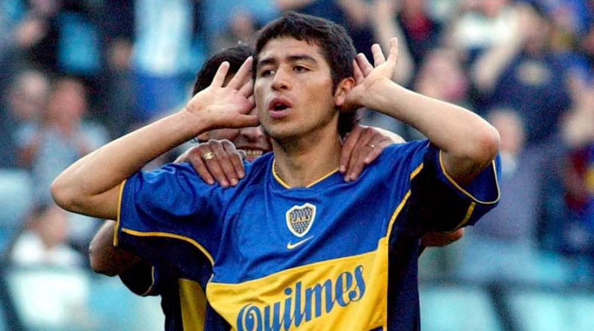

In my piece about whether soccer is becoming boring, I wrote that football isn’t art—that it’s closer to war than to a painting or a ballet. I still believe that. But I have to admit something: every now and then, a player comes along who makes you forget it. For ninety minutes, the battle disappears and all you see is something beautiful.
Juan Román Riquelme is the first name that comes to mind. He was never the fastest player on the pitch, and he didn’t need to be. Riquelme played at his own tempo, as if the match would wait for him—and somehow it did. He would receive the ball, stop, look up, and the whole stadium would hold its breath until he found the pass no one else had seen. At Boca Juniors, with his hands cupped behind his ears in that famous celebration, he became more than a player. He became a way of understanding the game.
Then there is Zinedine Zidane. The roulette, the first touch that made the ball look like it was attached to his foot, and that volley in the 2002 Champions League final at Hampden Park, when a looping cross dropped from the sky and he struck it with his weaker foot into the top corner. Some goals are great. That one looked like it had been painted.
Ronaldinho made the game feel like play again. The smile, the no-look passes, the elasticos, the free kicks that seemed to break the rules of physics. When Barcelona won at the Bernabéu in 2005, Real Madrid fans stood up and applauded him. Rival supporters don’t do that for a player who is simply good. They do it for someone who has shown them something they’ll never forget.
Andrea Pirlo did it more quietly. He barely seemed to run, and he never seemed rushed. With a single long pass he could change the shape of an entire match. Dennis Bergkamp did it with his touch: the goal against Argentina at the 1998 World Cup, three touches, perfectly calm, or the impossible turn against Newcastle that people still argue about. These weren’t players who just executed instructions. They made decisions that felt like signatures.
What all of them shared, I think, was time. Not speed or strength, but the feeling that they had more time on the ball than anyone else, and the imagination to use it. That is what turns a pass into a moment, and a moment into a memory you carry for years.
So no, football isn’t art. But these players made it feel like it. And maybe that’s exactly why we keep watching: not for the result, but for the chance that, one day, someone will make us feel that way again.